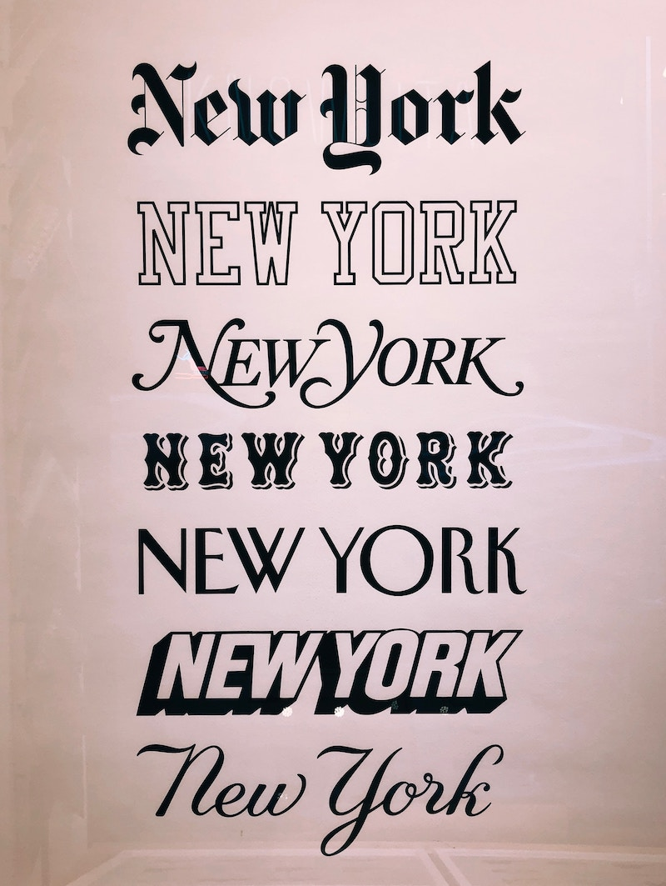
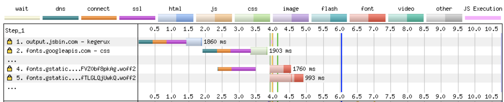

<!DOCTYPE html>
<html lang="en">
  <head>
    <meta charset="utf-8" />
    <meta name="viewport" content="width=device-width, initial-scale=1.0, maximum-scale=1.0, user-scalable=no" />

    <title>reveal-md</title>
    <link rel="stylesheet" href="./css/reveal.css" />
    <link rel="stylesheet" href="./_assets/style.css" id="theme" />
    <link rel="stylesheet" href="./css/highlight/github.css" />
    <link rel="stylesheet" href="./css/print/paper.css" type="text/css" media="print" />

  </head>
  <body>
    <div class="reveal">
      <div class="slides"><section  data-markdown><script type="text/template">

<!-- .slide: data-background="./images/types.jpg" -->
<div class="highlighter">
<h1 class="title dark-background">Hint, Hint, Font Loading Matters!</h1>
<h2 class="subtitle" style="color:#c1ad9a;">Sia Karamalegos</h2>
</div>

</script></section><section  data-markdown><script type="text/template">
## hi, i'm sia

[sia.codes](https://sia.codes/)


</script></section><section  data-markdown><script type="text/template">
## [bit.ly/font-perf](http://bit.ly/font-perf)
</script></section><section  data-markdown><script type="text/template">
# Why should I care about performance?
</script></section><section  data-markdown><script type="text/template">
<svg width="100" id="spinner" aria-hidden="true" focusable="false" role="img" xmlns="http://www.w3.org/2000/svg" viewBox="0 0 512 512"><path fill="currentColor" d="M288 39.056v16.659c0 10.804 7.281 20.159 17.686 23.066C383.204 100.434 440 171.518 440 256c0 101.689-82.295 184-184 184-101.689 0-184-82.295-184-184 0-84.47 56.786-155.564 134.312-177.219C216.719 75.874 224 66.517 224 55.712V39.064c0-15.709-14.834-27.153-30.046-23.234C86.603 43.482 7.394 141.206 8.003 257.332c.72 137.052 111.477 246.956 248.531 246.667C393.255 503.711 504 392.788 504 256c0-115.633-79.14-212.779-186.211-240.236C302.678 11.889 288 23.456 288 39.056z" class=""></path></svg>
</script></section><section  data-markdown><script type="text/template">
# User experience! 👩🏻‍💻
</script></section><section  data-markdown><script type="text/template">
> 53% of mobile sites are abandoned if pages take longer than 3 seconds to load.

<small>2016 report by Doubleclick by Google</small>
</script></section><section  data-markdown><script type="text/template">
> Starbucks implemented a 2x faster time to interactive resulting in a 65% increase in rewards registrations.

<small>[Chrome Dev Summit 2018](https://www.youtube.com/watch?v=Xryhxi45Q5M&t=1113s&index=6&list=PLNYkxOF6rcIDjlCx1PcphPpmf43aKOAdF )</small>
</script></section><section  data-markdown><script type="text/template">
> AliExpress reduced load by 36% and saw a 10.5% increase in orders.

<small>https://wpostats.com/</small>
</script></section><section  data-markdown><script type="text/template">
> Speed is now used as a ranking factor for mobile searches.

<small>https://developers.google.com/web/updates/2018/07/search-ads-speed</small>
</script></section><section  data-markdown><script type="text/template">


<small>[Moving towards a faster web](https://blog.chromium.org/2019/11/moving-towards-faster-web.html)</small>
</script></section><section  data-markdown><script type="text/template">
The internet consumes 416.2 TWh of electricity per year. A 10% savings would be equivalent to:

- 6.2 million fewer cars on the road 🚗 <!-- .element: class="fragment fade-in-then-semi-out" -->
- 32 billion less pounds of coal being burned 💨 <!-- .element: class="fragment fade-in-then-semi-out" -->
- 486 million tree seedlings grown for 10 years 🌳 <!-- .element: class="fragment fade-in-then-semi-out" -->

<small>[How is your website impacting the planet?](https://www.websitecarbon.com/), [Greenhouse Gas Equivalencies Calculator](https://www.epa.gov/energy/greenhouse-gas-equivalencies-calculator)</small>

<aside class="notes"><p>Most of the energy is consumed by the network and data center, not users&#39; devices.</p>
</aside></script></section><section  data-markdown><script type="text/template">
<!-- .slide: data-background="./images/AA-font.jpg" -->

<div style="background-color:rgba(255,255,255,0.75);padding:20px;">

> Typography is what language looks like.

<small>—Ellen Lupton, Thinking with Type</small>

</div>
</script></section><section  data-markdown><script type="text/template">


<small>[When Typography Speaks Louder Than Words](https://www.smashingmagazine.com/2012/04/when-typography-speaks-louder-than-words/)</small>
</script></section><section  data-markdown><script type="text/template">


<small>[When Typography Speaks Louder Than Words](https://www.smashingmagazine.com/2012/04/when-typography-speaks-louder-than-words/)</small>
</script></section><section  data-markdown><script type="text/template">

</script></section><section  data-markdown><script type="text/template">
# Case study: Web Fonts


</script></section><section  data-markdown><script type="text/template">
## Web Fonts

<ul class="plus-minus">
  <li class="plus fragment fade-in-then-semi-out">Hosted on fast and reliable CDNs</li>
  <li class="plus fragment fade-in-then-semi-out">Can provide optimized variants based on user's browser</li>
   <li class="plus fragment fade-in-then-semi-out"><span style="text-decoration:line-through">Opportunity for shared caching on popular fonts</span> 😿</li>
  <li class="plus fragment fade-in-then-semi-out">We now have control over FOUT and FOIT!</li>
  <li class="minus fragment fade-in-then-semi-out">Minumum of 2 separate requests</li>
  <li class="minus fragment fade-in-then-semi-out">Can't preload the font file</li>
  <li class="minus fragment fade-in-then-semi-out">Doesn't take advantage of HTTP2 multiplexing</li>
</ul>

<small>[Shared Cache is Going Away](https://www.jefftk.com/p/shared-cache-is-going-away): [Chrome](https://www.chromestatus.com/feature/5730772021411840), [Firefox](https://bugzilla.mozilla.org/show_bug.cgi?id=1536058), [Safari](https://bugs.webkit.org/show_bug.cgi?id=110269)</small>
</script></section><section  data-markdown><script type="text/template">


<small>[WebPageTest waterfall](http://webpagetest.org/customWaterfall.php?test=190406_EP_2dc139e2f92f617a2ec5f39624d6c8ca&run=2&width=930)</small>

<aside class="notes"><p>pause here and ask what else seems wasteful - calling from css and connection time to 2nd domain</p>
</aside></script></section><section  data-markdown><script type="text/template">
## Loading Google Fonts from CSS

```css
@import url('https://fonts.googleapis.com/css?family=Open+Sans:400,700');
```


<small>[WebPageTest waterfall](http://webpagetest.org/customWaterfall.php?test=190406_EP_2dc139e2f92f617a2ec5f39624d6c8ca&run=2&width=930)</small>

<aside class="notes"><p>pause here and ask what else seems wasteful - the connection time to fonts.gstatic.com</p>
</aside></script></section><section  data-markdown><script type="text/template">
## Loading Google Fonts from HTML

```html
<link href="https://fonts.googleapis.com/css?family=Muli:400"
      rel="stylesheet">
```


</script></section><section  data-markdown><script type="text/template">
## Loading Google Fonts from HTML

```html
<link href="https://fonts.googleapis.com/css?family=Muli:400"
      rel="stylesheet">
```


</script></section><section  data-markdown><script type="text/template">


<small>https://twitter.com/addyosmani/status/743571393174872064</small>

<aside class="notes"><p>dns-prefetch only does the dns part of the prefetch, but on the plus side, it doesn&#39;t expire after a short amount of time.</p>
</aside></script></section><section  data-markdown><script type="text/template">
## Loading Google Fonts with preconnect to fonts.gstatic.com

```html
<link rel="preconnect" href="https://fonts.gstatic.com/" crossorigin>
<link href="https://fonts.googleapis.com/css?family=Muli:400"
      rel="stylesheet">
```


</script></section><section  data-markdown><script type="text/template">


<small>[caniuse](https://caniuse.com/link-rel-preconnect)</small>

<aside class="notes"><p>IE11 does support dns-prefetch</p>
</aside></script></section><section  data-markdown><script type="text/template">
<!-- .slide: data-background="./images/greek-types.jpg" -->

<div style="background-color:rgba(255,255,255,0.75);padding:20px;">

# Case Study: <br>Self-Hosted Fonts

</div>
</script></section><section  data-markdown><script type="text/template">
```css
@font-face {
  font-family: 'Muli';
  font-style: normal;
  font-weight: 300;
  src: local('Muli Light'), local('Muli-Light'),
       url('../fonts/muli-v12-latin-300.woff2') format('woff2'),
       url('../fonts/muli-v12-latin-300.woff') format('woff');
}
```


<small>[WebPageTest waterfall](http://webpagetest.org/customWaterfall.php?test=190406_S0_0a529e9ce6086cbea8e3aadc942ddbf6&run=2&width=930)</small>
</script></section><section  data-markdown><script type="text/template">
```css
@font-face {
  font-family: 'Muli';
  font-style: normal;
  font-weight: 300;
  src: local('Muli Light'), local('Muli-Light'),
       url('../fonts/muli-v12-latin-300.woff2') format('woff2'),
       url('../fonts/muli-v12-latin-300.woff') format('woff');
}
```


<small>[WebPageTest waterfall](http://webpagetest.org/customWaterfall.php?test=190406_S0_0a529e9ce6086cbea8e3aadc942ddbf6&run=2&width=930)</small>
</script></section><section  data-markdown><script type="text/template">


<small>https://twitter.com/addyosmani/status/743571393174872064</small>
</script></section><section  data-markdown><script type="text/template">
## Preload self-hosted fonts*

```html
<link rel="preload" as="font" type="font/woff2"
  href="./fonts/muli-v12-latin-regular.woff2" crossorigin>

<link rel="preload" as="font" type="font/woff2"
  href="./fonts/muli-v12-latin-700.woff2" crossorigin>
```


<small>* Note that `preload` loads a resource whether used or not. Only preload resources that are needed on a particular page.</small>

<aside class="notes"><p><code>rel=&quot;preload&quot;</code> tells the browser to declaratively fetch the resource but not “execute” it (our CSS will queue usage). <code>as=&quot;font&quot;</code> tells the browser what it will be downloading so that it can set an appropriate priority. Without it, the browser would set a default low priority. <code>type=&quot;font/woff2</code> tells the browser the file type so that it only downloads the resource if it supports that file type. <code>crossorigin</code> is required because fonts are fetched using anonymous mode CORS.</p>
</aside></script></section><section  data-markdown><script type="text/template">


<small>[caniuse](https://caniuse.com/#feat=link-rel-preload)</small>
</script></section><section  data-markdown><script type="text/template">
# Every site is unique - test, test, test! ⚠️
</script></section><section  data-markdown><script type="text/template">
## WebPageTest Waterfall


<aside class="notes"><p>green - downloaded before started rendering so these files could be bottlenecks for rendering (js or css). Thumbnail view: scrolling moves the red line, gold border = visual change happened. <a href="https://webpagetest.org/result/200525_57_18cda7ecd946450919406f43121c34d0/">https://webpagetest.org/result/200525_57_18cda7ecd946450919406f43121c34d0/</a></p>
</aside></script></section><section  data-markdown><script type="text/template">
<!-- .slide: data-background="./images/no.jpg" -->

<div style="background-color:rgba(255,255,255,0.75);padding:20px;">

# UX: Font Rendering

</div>
</script></section><section  data-markdown><script type="text/template">
## FOIT


<aside class="notes"><p>FOIT in action — note the missing navbar text in the filmstrip screenshot (throttled to slow 3G)</p>
</aside></script></section><section  data-markdown><script type="text/template">
## `font-display`


<small>https://font-display.glitch.me/</small>

<aside class="notes"><p>add the <code>font-display</code> property to the <code>@font-face</code> declaration</p>
</aside></script></section><section  data-markdown><script type="text/template">


<small>https://twitter.com/addyosmani/status/1128548064287952896/</small>
</script></section><section  data-markdown><script type="text/template">
## FOUT

<video autoplay loop controls>
  <source src="./images/fout.mp4" type="video/mp4">
  Oops, video not supported
</video>
</script></section><section  data-markdown><script type="text/template">
> “The style doesn’t matter so much, it’s that it has to flow the same way.”

— Tim Brown, Twitter
</script></section><section  data-markdown><script type="text/template">
## Font Style-Matcher by Monica Dinculescu

[meowni.ca/font-style-matcher/](https://meowni.ca/font-style-matcher/)
</script></section><section  data-markdown><script type="text/template">
<!-- .slide: data-background="./images/typography-collage.jpg" -->

<h1 class="dark-background highlighter">Variable Fonts</h1>
</script></section><section  data-markdown><script type="text/template">
## More resources mentioned

- [Making Google Fonts Faster⚡](https://sia.codes/posts/making-google-fonts-faster/) - includes how do download and host locally
- [Google Analytics + caniuse = *MAGIC*](https://sia.codes/posts/google-analytics-caniuse-magic/) - how to import your Google Analytics data into caniuse
- [subfont](https://github.com/Munter/subfont)
</script></section><section  data-markdown><script type="text/template">
<!-- .slide: data-background="./images/types.jpg" -->

<div style="background-color:rgba(255,255,255,0.75);padding:20px;">

# Thanks!

Slides & resources for this talk at [bit.ly/font-perf](http://bit.ly/font-perf)

Writing, resources, and more at [sia.codes](https://sia.codes/)

</div></script></section></div>
    </div>

    <script src="./js/reveal.js"></script>

    <script>
      function extend() {
        var target = {};
        for (var i = 0; i < arguments.length; i++) {
          var source = arguments[i];
          for (var key in source) {
            if (source.hasOwnProperty(key)) {
              target[key] = source[key];
            }
          }
        }
        return target;
      }

      // Optional libraries used to extend on reveal.js
      var deps = [
        { src: './plugin/markdown/marked.js', condition: function() { return !!document.querySelector('[data-markdown]'); } },
        { src: './plugin/markdown/markdown.js', condition: function() { return !!document.querySelector('[data-markdown]'); } },
        { src: './plugin/highlight/highlight.js', async: true, callback: function() { hljs.initHighlightingOnLoad(); } },
        { src: './plugin/zoom-js/zoom.js', async: true },
        { src: './plugin/notes/notes.js', async: true },
        { src: './plugin/math/math.js', async: true }
      ];

      // default options to init reveal.js
      var defaultOptions = {
        controls: true,
        progress: true,
        history: true,
        center: true,
        transition: 'default', // none/fade/slide/convex/concave/zoom
        dependencies: deps
      };

      // options from URL query string
      var queryOptions = Reveal.getQueryHash() || {};

      var options = extend(defaultOptions, {"transition":"none"}, queryOptions);
    </script>


    <script>
      Reveal.initialize(options);
    </script>
  </body>
</html>
